Estudio de alta frecuencia de la riqueza del plancton microbiano en el Atlántico Sudoccidental Sur
Introducción
Las aguas oceánicas de la capa eufótica están pobladas por microorganismos planctónicos que sostienen las redes tróficas marinas y modulan ciclos biogeoquímicos globales (Falkowski et al., 2008). Sus comunidades son transportadas pasivamente por las corrientes, cuyas condiciones físico-químicas pueden alterar las abundancias celulares de los microorganismos. Comprender cómo varían estas comunidades a lo largo de gradientes ambientales es una pregunta central en ecología microbiana marina y, a su vez, representa un desafío particular ya que la naturaleza dinámica del fluido marino no permite distinguir fácilmente los efectos relativos de las dimensiones espacial y temporal.
A escala planetaria, estas comunidades unicelulares están influenciadas por diferencias de temperatura y radiación solar a lo largo del gradiente latitudinal, así como por grandes patrones de mezcla, estratificación y disponibilidad de nutrientes, los cuales dependen de la ubicación relativa a los continentes, los giros oceánicos subtropicales y las principales corrientes marinas, cada uno con sus propias variaciones estacionales e interanuales. En la mesoescala, los frentes marinos y los remolinos de entre 10-100 km de extensión modifican las condiciones del medio marino por períodos de semanas a meses, mientras que procesos vinculados a estructuras menores de una magnitud de 1-10 km (aquellas denominadas de sub-mesoescala) pueden influir como forzantes ecológicos por lapsos de horas a días. Las tasas de renovación de biomasa y de composición comunitaria integran señales provenientes de todas estas escalas (Levy et al., 2015).
Dentro de este marco, el sector sudoccidental del Atlántico Sur (SOAS) representa un sistema ideal para estudiar cómo distintos forzantes estructuran comunidades planctónicas a lo largo de sus marcados gradientes ambientales. Al sur del 40°S, y adyacente al continente sudamericano, se sitúa la Plataforma Patagónica, una región de alta productividad primaria y biodiversidad (Rivas et al., 2006). Desde el sur ingresan aguas subantárticas de baja salinidad, influenciadas por el aporte de masas de agua procedentes del Estrecho de Magallanes, originadas en las zonas de alta precipitación al oeste de la cordillera (Piola et al., 2018). La plataforma presenta una batimetría amplia y relativamente plana, que se interrumpe bruscamente hacia los 200 m de profundidad, dando paso a un talud que desciende hasta los 4000 m. A lo largo del talud, en dirección N-NE, circula la Corriente de Malvinas, la cual es un desprendimiento de la Corriente Circumpolar Antártica. Esta corriente fría y rica en macronutrientes posee una salinidad relativamente mayor que las aguas de plataforma, generando un frente termohalino permanente pero de intensidad moderada.
El SOAS se caracteriza por una fuerte estacionalidad, con floraciones fitoplanctónicas extensas entre la primavera y el verano. De forma general, estas floraciones ocurren al norte de 45°S entre septiembre y noviembre, y al sur entre noviembre y enero (Romero et al., 2006). Durante este período productivo suele observarse una sucesión de grupos dominantes, incluyendo diatomeas, dinoflagelados y pequeños flagelados como los cocolitofóridos (Guinder et al., 2024). Sin embargo, imágenes satelitales y campañas recientes revelan un escenario más heterogéneo —especialmente en aguas de plataforma— con múltiples parches en mesoescala dominados por una o pocas especies (Ferronato et al., 2025). Para atribuir cambios comunitarios a diferencias espaciales en un entorno físicamente tan dinámico, es necesario contar con alta densidad o frecuencia de muestreo en el espacio y en el tiempo.
Objetivos
Se propone estudiar los cambios en la riqueza de las comunidades de plancton microbiano a lo largo de los frentes del talud continental y de transición a una floración fitoplanctónica, a partir de la salinidad superficial y el tamaño de los organismos que componen a la comunidad. Se analizarán las variaciones en las comunidades, tanto en la mesoescala como en la submesoescala.
Hipótesis
La riqueza se ve afectada tanto por la salinidad como por las estructuras de las comunidades. De esta forma, las condiciones asociadas a los frentes de mesoescala presentan una menor riqueza con una dominancia de especies especialistas, mientras que, las que modelan de forma moderada a los frentes de submesoescala, están asociadas a una mayor riqueza.
Predicciones
Se espera encontrar una mayor riqueza asociada a aguas internas de la plataforma, las cuales presentan alteraciones moderadas en sus condiciones, con una salinidad relativamente baja y un mayor tamaño de organismos.
Además, se espera que la riqueza sea menor en aguas del talud, del lado este del frente, donde la salinidad es máxima y la comunidad está dominada, al momento del muestreo, por organismos pequeños como los cocolitofóridos y en menor parte los dinoflagelados desnudos.
Metodología
Para estudiar cómo varía la diversidad en los frentes oceánicos, se utilizaron datos provenientes de una campaña de muestreo de tres semanas realizada en diciembre de 2021 a bordo de la goleta científica Tara. El muestreo combinó mediciones continuas y semicontinuas obtenidas mediante el bombeo de agua superficial hacia instrumentos instalados a bordo, junto con estaciones discretas para recolectar muestras de agua y biomasa a distintas profundidades.
Se realizaron dos transectas, una atravesando el frente del talud continental (desde el talud, donde las aguas son más salobres y profundas) y otro sobre la plataforma, atravesando una floración fitoplanctónica de la plataforma continental.
Para evaluar la diversidad, se utilizó la riqueza en 5ml de agua como variable respuesta. Luego, las variables explicativas medidas en la expedición fueron la salinidad superficial (SSS[UPS]), el tamaño de partículas \(^{-1}\) (gamma), temperatura superficial (SST[°C]), indice de refractancia de las particulas (bbp[mg/m3)], la clorofila (Chl[mg/m3]) y el carbono orgánico particulado (POC[mg/m3]). Además de si se trataba de transecta realizada sobre el frente estable del talud continental o si era el transitorio de aguas internas de la plataforma. Por otro lado, se calcularon las distancias entre cada punto de muestreo utilizando el paquete geosphere (RJ. Hijmans, 2024 ), con el fin de evaluar la independencia de las observaciones, a partir de las coordenadas geográficas del velero.
Los registros de temperatura y salinidad fueron obtenidos mediante un termosalinógrafo instalado a bordo, y las estimaciones de concentración de clorofila “a” fueron obtenidas por un fluorómetro.
Las mediciones semicontinuas consistieron en observaciones de grupos planctónicos a través de un sistema que combina microfluídica y microscopía, denominado Imaging FlowCytobot (IFCB). Este instrumento captura imágenes microscópicas de partículas presentes en 5 mL de agua de mar, aproximadamente cada 30 minutos, y está optimizado para detectar organismos con diámetros entre 5 y 20 micrones. Las imágenes obtenidas se analizan posteriormente mediante la plataforma EcoTaxa.
El análisis computacional fue realizado utilizando el entorno y lenguaje R (R Core Team, 2024). Además se utilizó un diverso número de paquetes como ggplot2 (H. Wickham, 2016) para realizar gráficos exploratorios. El análisis de los residuales de los modelos con una distribución de probabilidades de Poisson se efectuaron utilizando el paquete ‘DHARMa’ (F. Hartig, 2020).
Modelo Inicial
Debido a que la riqueza en 5ml es un conteo de taxones en un continuo, presentando una cota inferior pero no superior, se propone que sigue una distribución de probabilidades de tipo Poisson.
Como los datos se toman en una serie espacial, no se puede asumir independencia entre las muestras. Por ende abordaremos un modelo marginal con un diseño de medidas repetidas en el espacio, donde la falta de independencia de los datos con una matriz de covarianzas. Este es un modelo generalizado lineal, ya que la variable respuesta tiene una distribución Poisson y se usan medidas repetidas (GEE).
\[ \begin{gather} \ln( E ( \frac {Riqueza}{5 ~ ml ~ Agua}))_i = \beta_0 + \beta_1 + SSS_ị \beta_2 TamañoParticulas_i + \beta_3 SST_i + \beta_4 bbp_i + \beta_5 Clorofila_i + \beta_6 POC_i + \beta_7 Estable_i + \beta_8 Distancia_i \\ (\frac {Riqueza}{5 ~ ml ~ Agua})_i \sim Poisson ( \lambda_i) \end{gather} \]
Como en GEE no existe una matriz de correlación continua de distancias, asumimos una autroregresiva de orden uno, debido a que las distancias entre los puntos se mantienen relativamente constantes.
Desarollo Analisis
Transformación datos
Para comenzar, se pasaron las latitudes y longitudes a distancias, tomando un punto de cada fuente como referencia y renombramos los frentes.
datos_crudos <-read.csv("../datos/complete_data.csv", header=T)
summary(datos_crudos) object_id lat lon source
Length:75 Min. :-49.29 Min. :-64.00 Length:75
Class :character 1st Qu.:-48.57 1st Qu.:-63.86 Class :character
Mode :character Median :-46.37 Median :-61.53 Mode :character
Mean :-47.05 Mean :-61.94
3rd Qu.:-46.03 3rd Qu.:-60.50
Max. :-45.67 Max. :-59.74
riqueza Chl POC gamma
Min. :10.00 Min. : 0.4548 Min. :105.9 Min. :0.01552
1st Qu.:14.00 1st Qu.: 0.6219 1st Qu.:136.0 1st Qu.:0.46007
Median :17.00 Median : 1.5955 Median :204.1 Median :0.89590
Mean :17.39 Mean : 3.7664 Mean :248.8 Mean :0.78349
3rd Qu.:19.00 3rd Qu.: 4.8241 3rd Qu.:339.3 3rd Qu.:1.03459
Max. :32.00 Max. :19.6760 Max. :615.9 Max. :1.43580
SST SSS bbp
Min. :10.84 Min. :33.23 Min. :0.000643
1st Qu.:11.53 1st Qu.:33.40 1st Qu.:0.001404
Median :11.88 Median :33.50 Median :0.001794
Mean :12.32 Mean :33.49 Mean :0.002673
3rd Qu.:13.35 3rd Qu.:33.56 3rd Qu.:0.002660
Max. :13.59 Max. :33.88 Max. :0.010674 ####DISTANCIA####
# Coordenadas iniciales por localidad
ref_points <- data.frame(
source = c("bloom", "talud"),
ref_lat = c(-48.2656, -45.6659),
ref_lon = c(-63.7595, -59.7381)
)
# Calcular distancia al punto inicial de cada localidad
datos_crudos <- datos_crudos %>%
left_join(ref_points, by = "source") %>%
mutate(
dist_m = distHaversine(
p1 = cbind(ref_lon, ref_lat),
p2 = cbind(lon, lat)
),
dist = dist_m / 1000
)
datos = datos_crudos[, -c(2,3,12:14 )]
datos$source <- recode_factor(datos$source,
"bloom" = "transitorio",
"talud" = "estable")Analisis Exploratorio Datos
Analiticamente
Se realiza un resumen de las variables explicativas por cada frente, observando las medias y la cantidad de muestras en cada una.
resumen_frente <- datos %>%
group_by(source) %>%
summarize(
n = n(),
riqueza = mean(riqueza),
salinidad = mean(SSS),
chl = mean(Chl),
POC = mean(POC),
gamma = mean(gamma),
SST = mean(SST),
bbp = mean(bbp)
)
knitr :: kable(resumen_frente,
caption = "Medidas resumen por frente ") | source | n | riqueza | salinidad | chl | POC | gamma | SST | bbp |
|---|---|---|---|---|---|---|---|---|
| transitorio | 25 | 21.80 | 33.33616 | 7.966973 | 363.3142 | 0.3174908 | 11.54059 | 0.0047610 |
| estable | 50 | 15.18 | 33.56649 | 1.666169 | 191.6131 | 1.0164925 | 12.71537 | 0.0016287 |
Graficamente
Se explora la relación entre las variables exploratorias con la variable respuesta, separando para cada frente.
linealidadPlot = function (var, nombre){
ggplot(datos, aes(x={{var}}, y= riqueza,group = source , color = source)) +
geom_point( size=3, shape=19 ) +
geom_smooth(method=lm, se=F, fullrange=F, size=0.5)+
xlab( nombre ) + ylab("Riqueza")
}linealidadPlot(Chl,"Clorofila [mg/m3]")
linealidadPlot(POC,"POC [mg/m3]")
linealidadPlot(bbp,"bbp [mg/m3]")
linealidadPlot(gamma,"gamma")
linealidadPlot(SST,"Temperatura Superficial [°C]")
linealidadPlot(SSS,"Salinidad Superficial [UPS]")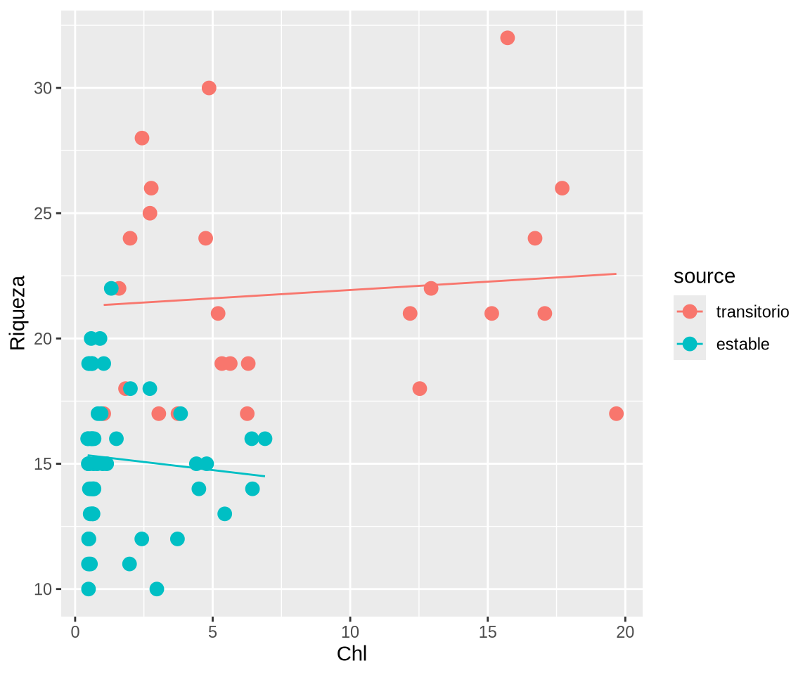
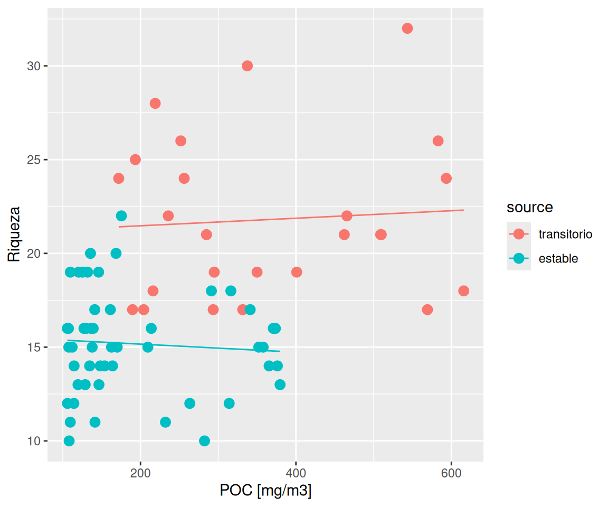
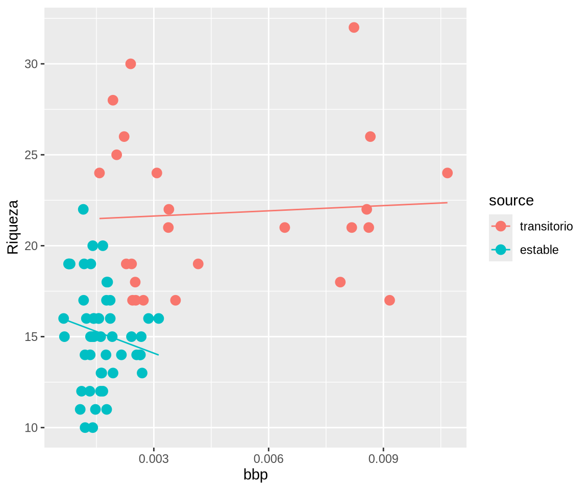
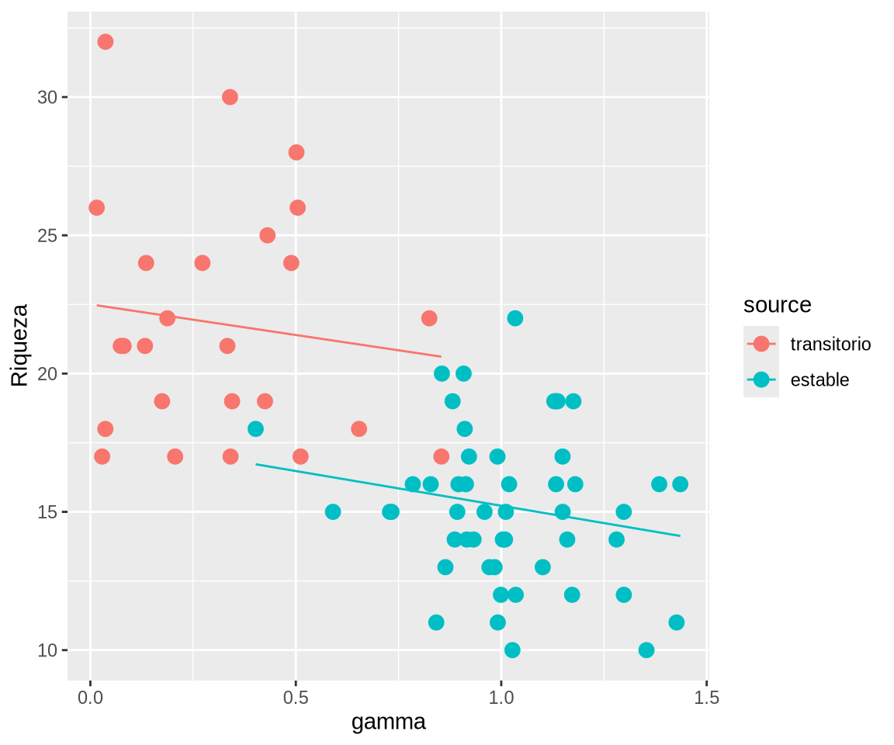
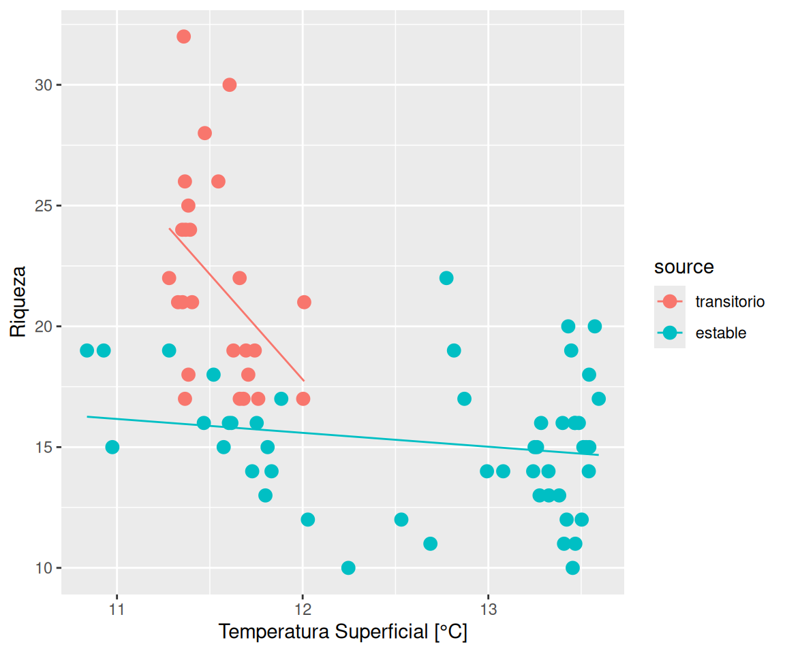
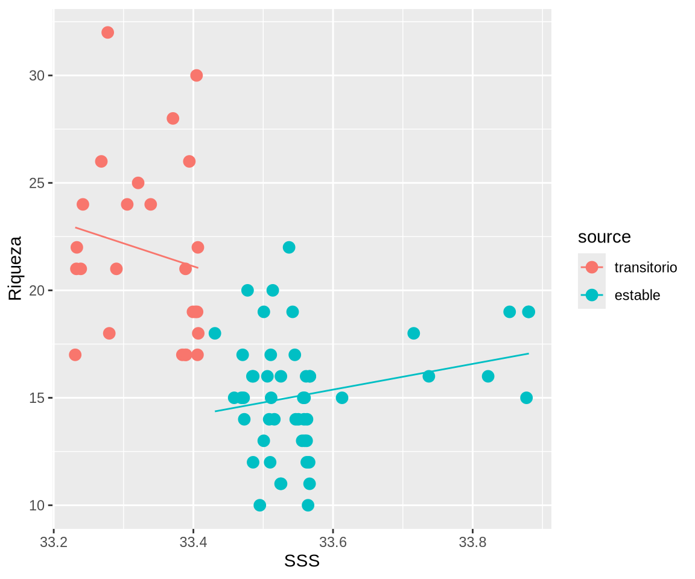
Correlacion
Como las variables medidas se esperan que estén correlacionadas, se realizó un gráfico de correlación para evaluar la misma, separando por cada frente.
library(GGally)
ggpairs(datos[2:10], aes ( color = source))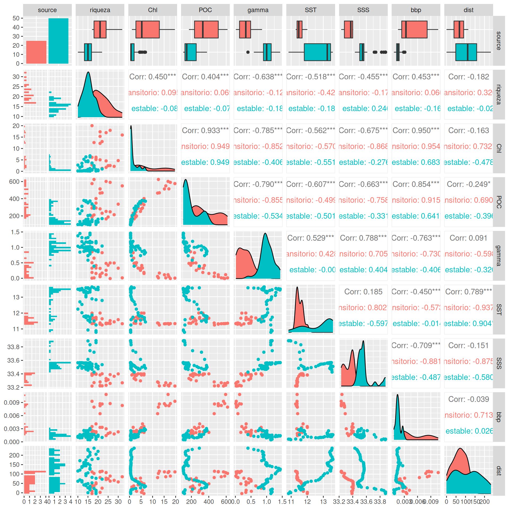
library(knitr)
m0<-geeglm(formula= riqueza~Chl+SSS+source+gamma+bbp+POC+SST, family = poisson, data=datos,id=source,corstr = "ar1")
kable(vif(m0),
digits = 3,
caption = "VIF") # <-- No format argument| x | |
|---|---|
| Chl | 1.184410e+14 |
| SSS | 1.132750e+13 |
| source | 1.135208e+15 |
| gamma | 2.425235e+15 |
| bbp | -6.744785e+12 |
| POC | 1.005204e+14 |
| SST | 1.478070e+13 |
A partir de esto se observa una alta correlación entre las variables explicativas, por lo que es necesario realizar una selección criteriosa de los modelos.
Modelo
Para comenzar se realiza un modelo con todas las variables explicativas.
library(geepack)
datos <- datos %>%
arrange(object_id)
m0<-geeglm(formula= riqueza~Chl+SSS+source+gamma+bbp+POC+SST, family = poisson, data=datos,id=source,corstr = "ar1")Supuestos
Dispersion
Se verifica la ausencia de sobre o subdispersión de los residuos de pearson.
testDispersion(m0, type = "PearsonChisq")
Parametric dispersion test via mean Pearson-chisq statistic
data: m0
dispersion = 0.58674, df = 67, p-value = 0.005528
alternative hypothesis: two.sidedsim <- simulateResiduals(fittedMod = m0, plot = T)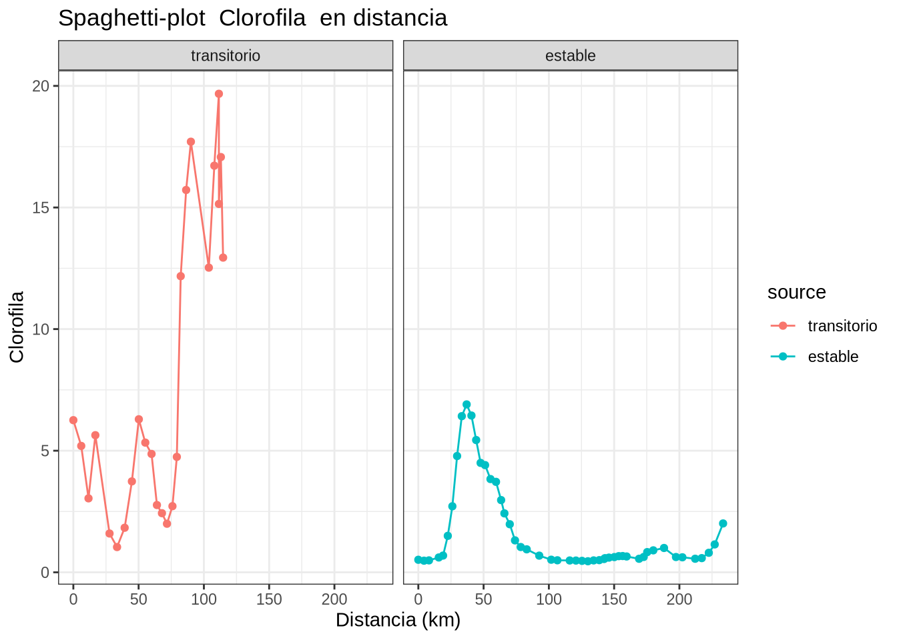
Se observa subdipersion de los residuos, por lo que debe ser modelada con una distribución como Conway-Maxwell-Poisson para evitar sobrestimar los errores estándars.
Sin embargo, la librería GEE no presenta alternativas para la familia Poisson que corrijan la subdispersion ( la documentación dice la existencia de quasiPoisson pero no se logró que funcione) por lo que se descarta la posibilidad de modelar la subdispersión.
Ante este problema, se decide asumir que la distribución de probabilidades de la riqueza se asemeja a una distribución Normal debido a que la distribución Poisson con $\lambda$ mayor a ocho se aproxima a esta.
Plan B
Modelo Riqueza ~ Normal
\[ \begin{gather} Riqueza_i = \beta_0 + \beta_1 + SSS_ị \beta_2 TamañoParticulas_i + \beta_3 SST_i + \beta_4 bbp_i + \beta_5 Clorofila_i + \beta_6 POC_i + \beta_7 Estable_i + \beta_8 Distancia_i + \epsilon_i \\ \epsilon_i \sim Normal(0,\sigma^2_{frente}) \\ i : 1 -75 \end{gather} \]
Como en Poisson mayor media equivale a mayor varianza, la homocedasticidad es problemática al convertirlo en Normal. Sin embaro, se encuentra que estimando una varianza para cada frente soluciona la falta de homocedasticidad. Se utilizó la función var Ident para el modelado de la varianza.
Asimismo se probaron var Power y var Exp pero los resultados no fueron satisfactorios debido a que no corrigen la heterocedasticidad. Además, el modelado de varianza por var Ident no presenta un aumento significativo de cantidad de parámetros estimados en comparación a los otros.
VER de agregar var Power y var Exp
Seleccion de modelos
Dada la alta correlación entre las variables explicativas, se decide por criterio de interés biológico seleccionar a la salinidad superficial y el Tamaño inverso de partículas. Como estas dos presentan una correlación entre ellas, no serán utilizados en el mismo modelo, sino que se generaran dos distintos: uno explicará las variaciones de la riqueza a partir del ambiente, mientras el otro lo hará a partir de las condiciones intrínsecas de la comunidad. Debido a la falta de linealidad de la salinidad se utiliza un polinomio de grado dos para este modelo.
m_Nulo = gls(model = riqueza ~ 1 , weights = varIdent(form = ~1|source) , data = datos,correlation = corCAR1(form = ~ dist|source))
m_gamma=gls(model = riqueza ~ gamma ,data = datos, weights = varIdent(form = ~1|source),correlation = corCAR1(form = ~ dist|source))
m_SSS2 = gls(model = riqueza ~ poly(SSS, 2) ,data = datos, weights = varIdent(form = ~1|source),correlation = corCAR1(form = ~ dist|source))
m_SSS2ygamma = gls(model = riqueza ~ scale(SSS) + I(scale(SSS)^2) + gamma,
data = datos,
weights = varIdent(form = ~1|source) ,correlation = corCAR1(form = ~ dist|source))
modelos <- list(
"Nulo" = m_Nulo,
"Tamaño Particulas" = m_gamma,
"SSS^2" = m_SSS2,
"SSS^2 + Gamma" = m_SSS2ygamma
)aic_values <- sapply(modelos, AIC)
bic_values <- sapply(modelos, BIC)
rse_values <- sapply(modelos, sigma)
phi_values <- sapply(modelos, function(m) {
# Get the correlation structure
cor_struct <- coef(m$modelStruct$corStruct, unconstrained = FALSE)
if (is.null(cor_struct)){
cor_struct = 1
}
return(cor_struct)
})
p_value_last_coef <- sapply(modelos, function(m) {
# Get the coefficient table from the summary
tTable <- summary(m)$tTable
# Get the number of rows (which is the last coefficient)
last_row <- nrow(tTable)
# Get the p-value from that last row
p_val <- tTable[last_row, "p-value"]
return(p_val)
})
results_table <- data.frame(
Phi = phi_values,
SE = rse_values,
AIC = aic_values,
BIC = bic_values,
P_valor = p_value_last_coef
)
library(knitr)
kable(results_table,
digits = 3,
caption = "GLS Model Comparison") # <-- No format argument| Phi | SE | AIC | BIC | P_valor | |
|---|---|---|---|---|---|
| Nulo.Phi | 0 | 7.597 | 422.611 | 431.827 | 0.000 |
| Tamaño Particulas.Phi | 0 | 4.662 | 401.200 | 412.652 | 0.000 |
| SSS^2.Phi | 0 | 4.910 | 388.371 | 402.031 | 0.000 |
| SSS^2 + Gamma.Phi | 0 | 4.727 | 392.939 | 408.778 | 0.055 |
Se puede observar como al combinar ambos modelos el AIC disminuye, por ende se analizó la salinidad superficial y el gamma de forma independiente por un interés biológico.
Supuestos
No se encuentra evidencias suficientes para rechazar los supuestos de linealidad de las variables explicativas con la variable respuesta, la normalidad de los residuos, la homocedasticidad de las varianzas y la independencia de los datos con el gráfico ACF.
library(performance)
model_names <- names(modelos)
for (current_name in model_names) {
m <- modelos[[current_name]]
r = residuals(m , type = "pearson")
predichos = predict(m)
plot(predichos , r , main = current_name)
abline(h = 0, col = "red", lty = 2)
acf(resid(m, type="normalized"), main=current_name)
qqPlot(r)
print(shapiro.test(r))
}
Shapiro-Wilk normality test
data: r
W = 0.9816, p-value = 0.3467
Shapiro-Wilk normality test
data: r
W = 0.97465, p-value = 0.137
Shapiro-Wilk normality test
data: r
W = 0.98244, p-value = 0.3852
Shapiro-Wilk normality test
data: r
W = 0.97955, p-value = 0.2658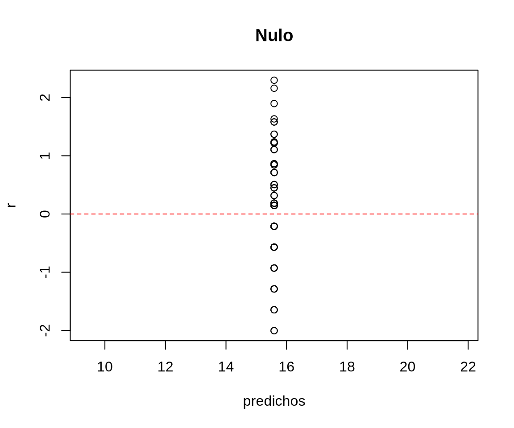

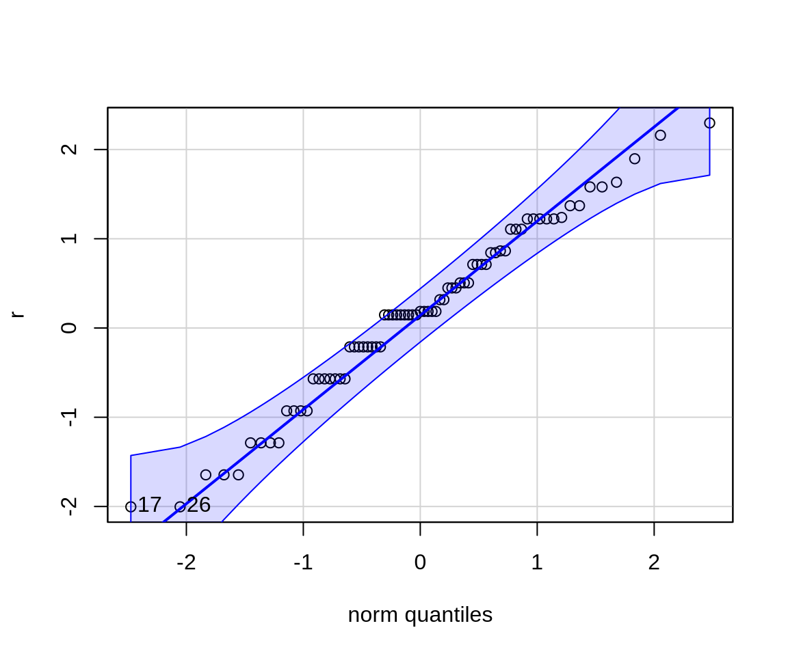

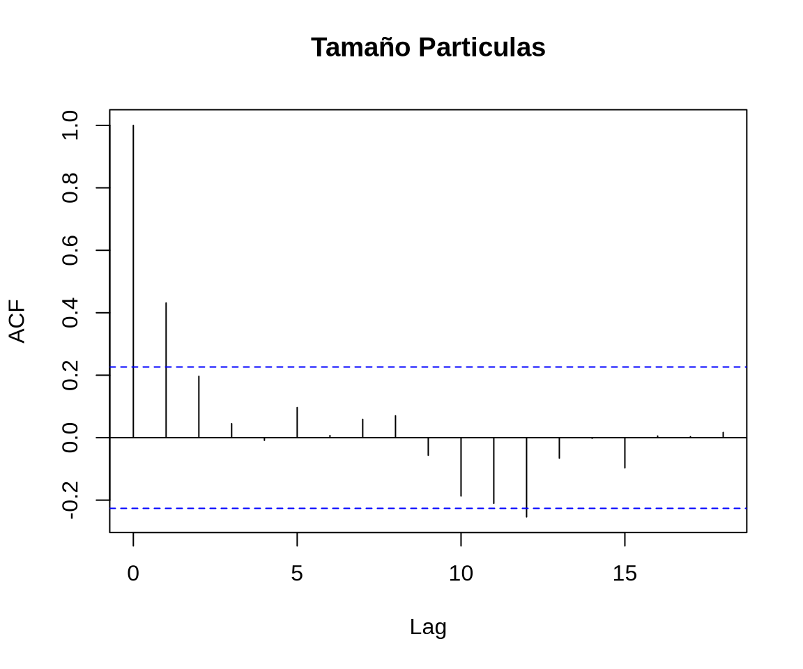
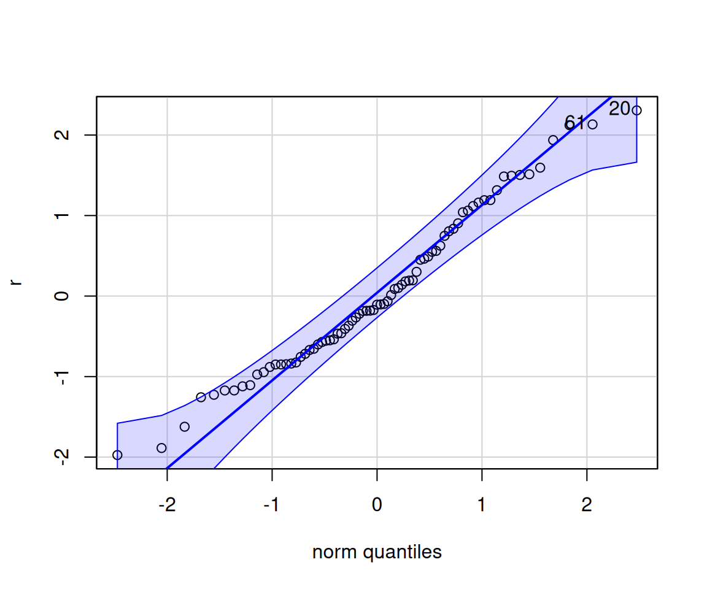
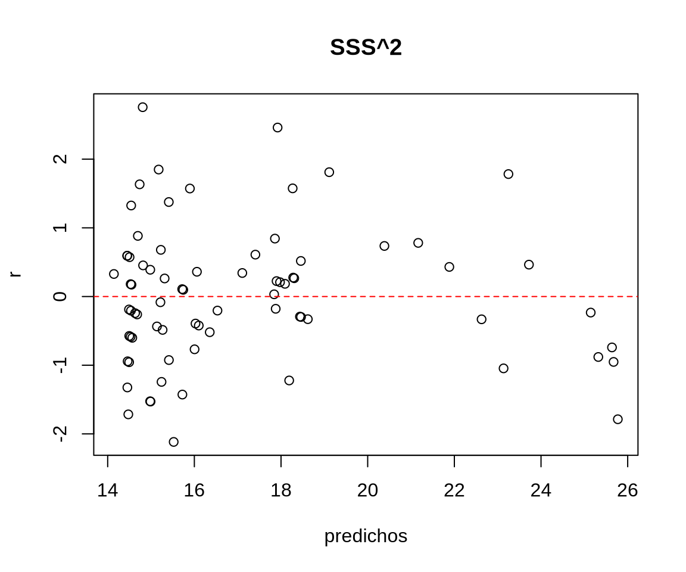
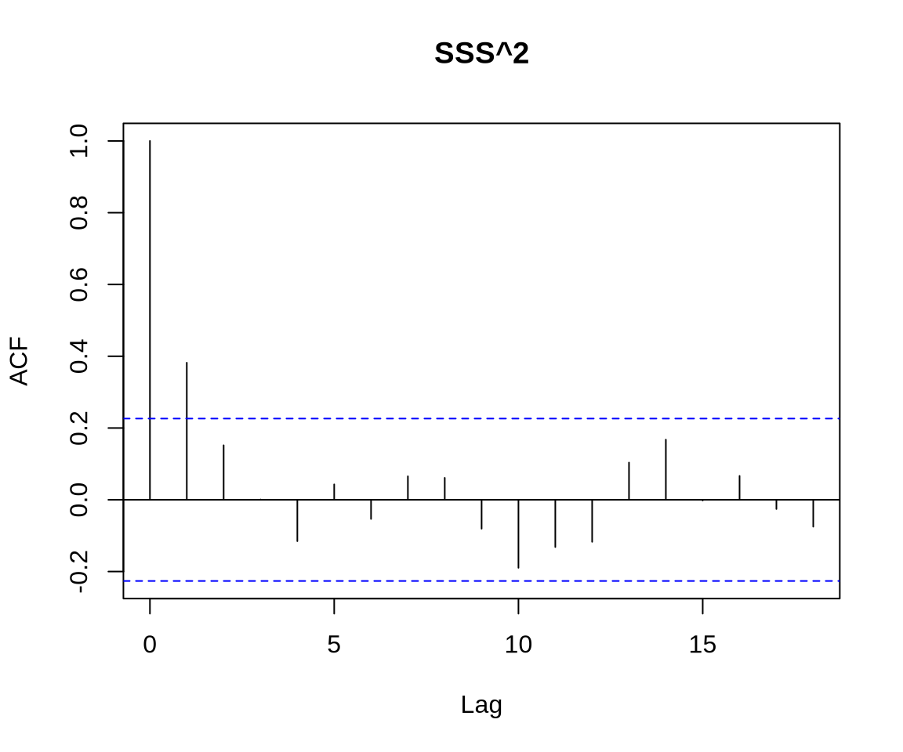
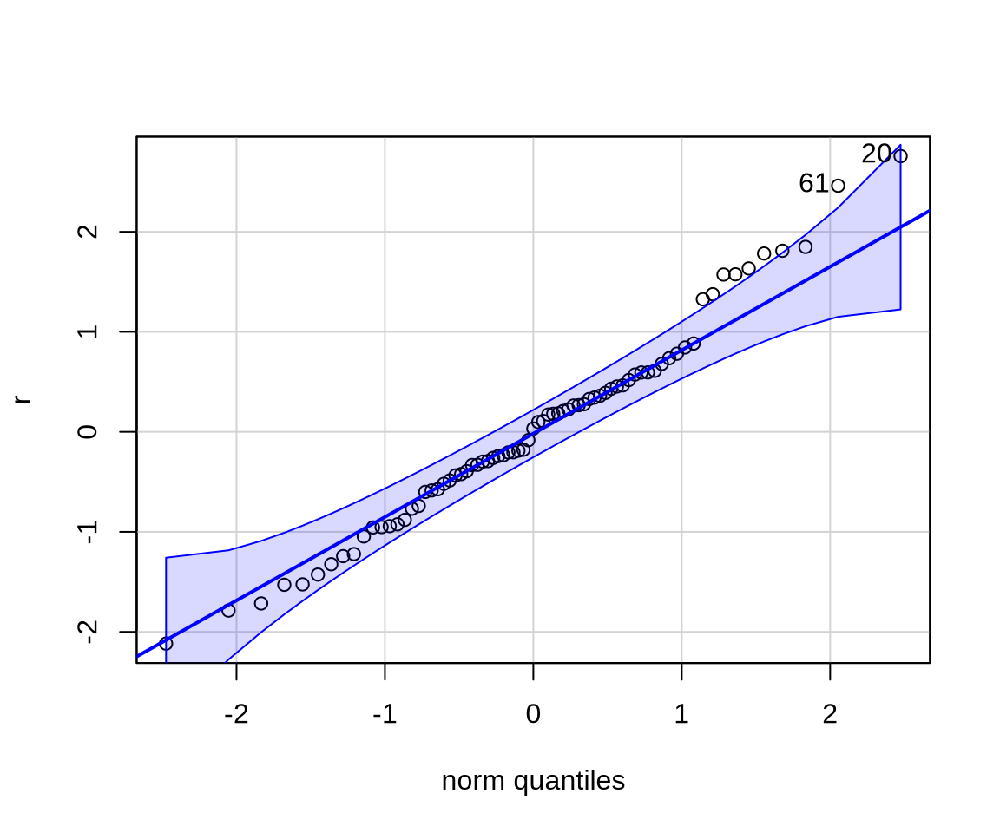
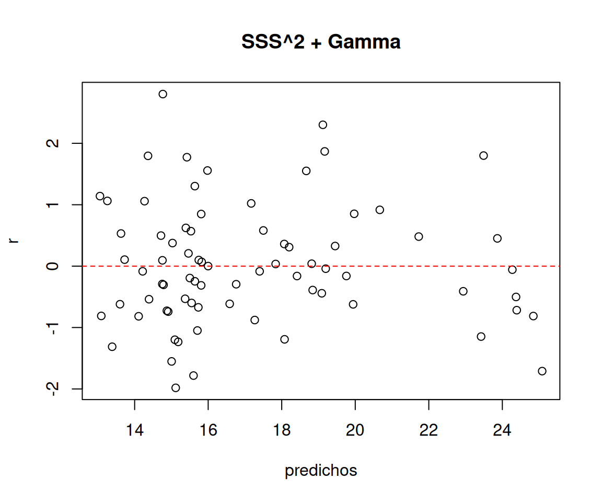
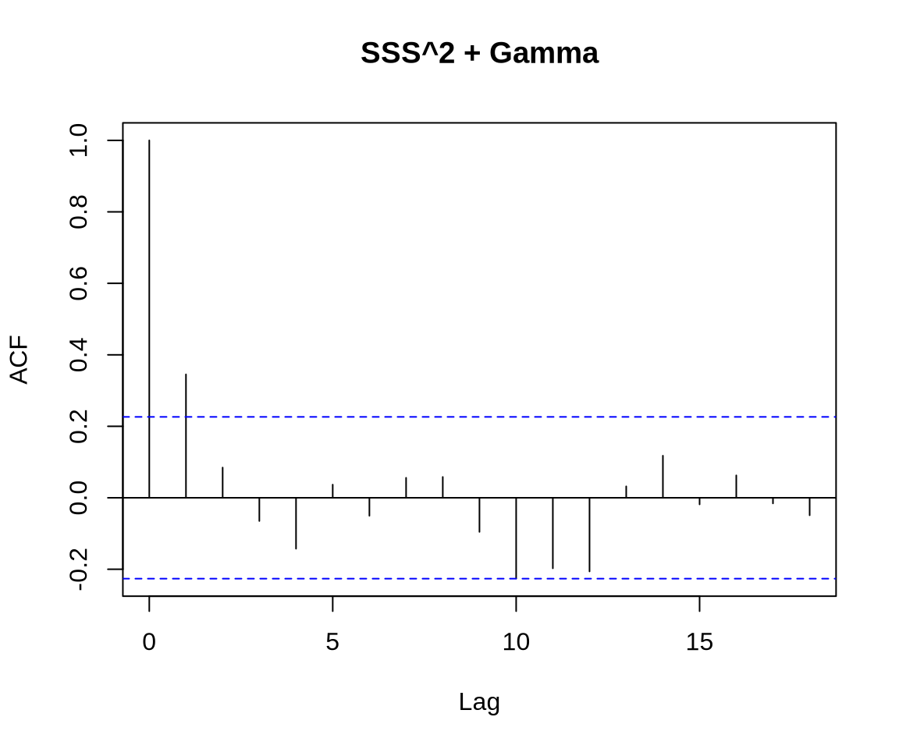
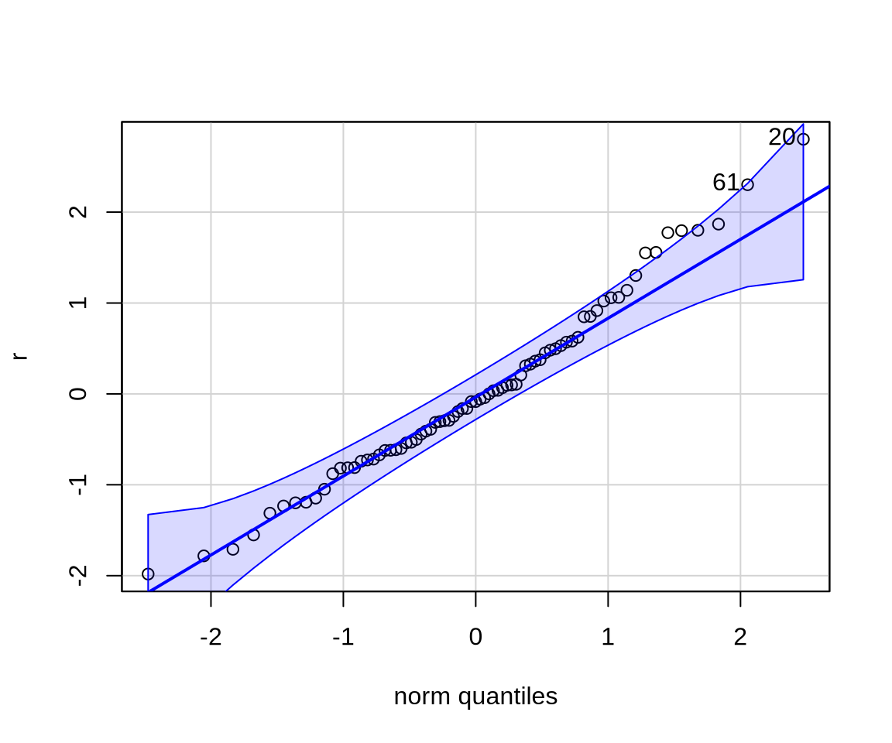
Diagnóstico del modelo
Resultados Finales
summary(m_SSS2)Generalized least squares fit by REML
Model: riqueza ~ poly(SSS, 2)
Data: datos
AIC BIC logLik
388.3711 402.0311 -188.1855
Correlation Structure: Continuous AR(1)
Formula: ~dist | source
Parameter estimate(s):
Phi
9.636215e-15
Variance function:
Structure: Different standard deviations per stratum
Formula: ~1 | source
Parameter estimates:
transitorio estable
1.0000000 0.5314462
Coefficients:
Value Std.Error t-value p-value
(Intercept) 17.17246 0.398542 43.08827 0
poly(SSS, 2)1 -18.22166 3.812801 -4.77907 0
poly(SSS, 2)2 21.09189 3.502766 6.02150 0
Correlation:
(Intr) p(SSS,2)1
poly(SSS, 2)1 -0.463
poly(SSS, 2)2 0.371 -0.463
Standardized residuals:
Min Q1 Med Q3 Max
-2.1168380 -0.5799157 0.0322753 0.5453694 2.7564371
Residual standard error: 4.909523
Degrees of freedom: 75 total; 72 residualsummary(m_gamma)Generalized least squares fit by REML
Model: riqueza ~ gamma
Data: datos
AIC BIC logLik
401.1997 412.652 -195.5998
Correlation Structure: Continuous AR(1)
Formula: ~dist | source
Parameter estimate(s):
Phi
5.90014e-35
Variance function:
Structure: Different standard deviations per stratum
Formula: ~1 | source
Parameter estimates:
transitorio estable
1.0000000 0.6160909
Coefficients:
Value Std.Error t-value p-value
(Intercept) 22.352867 1.102099 20.282096 0
gamma -6.748224 1.142268 -5.907741 0
Correlation:
(Intr)
gamma -0.941
Standardized residuals:
Min Q1 Med Q3 Max
-1.9746546 -0.6932941 -0.1069366 0.7764364 2.3063315
Residual standard error: 4.662027
Degrees of freedom: 75 total; 73 residualconfint(m_SSS2) 2.5 % 97.5 %
(Intercept) 16.39134 17.95359
poly(SSS, 2)1 -25.69461 -10.74871
poly(SSS, 2)2 14.22659 27.95718confint(m_gamma) 2.5 % 97.5 %
(Intercept) 20.192794 24.51294
gamma -8.987029 -4.50942Para ambos modelos se encuentra que los estimadores son significativamente distintos de cero (p < 0.05) y que poseen un Phi de covarianza muy bajo, cercano a cero. Sin embargo se decidió dejar la matriz de covarianzas ya que presentan mejor AIC que los mismos modelos sin considerarla.
Ecuación estimada de la riqueza en función del tamaño de partículas inverso:
\[ Riqueza = 22.353 - 6.748*TamPart \]
Ecuación estimada de la riqueza en función del tamaño de la salinidad superficial:
\[ Riqueza = 17.17 - 18.22*SSS + 21.09*SSS² \]
Se observa una relación lineal negativa entre la salinidad y la riqueza a valores de salinidad bajos entre 33,2 - 33,5 UPS aproximadamente. Mientras que a valores medios y altos de salinidad, se observa una tendencia inversa dada por el término cuadrático. Sin embargo, los valores de riqueza no llegan a recomponerse quedando riquezas bajas en altas salinidades.
library(ggeffects)
pred_salinidad <- ggpredict(update(m_SSS2,correlation = NULL), terms = c("SSS [all]"))
plot(pred_salinidad )+
labs(
title = "",
x = "SSS [UPS]",
)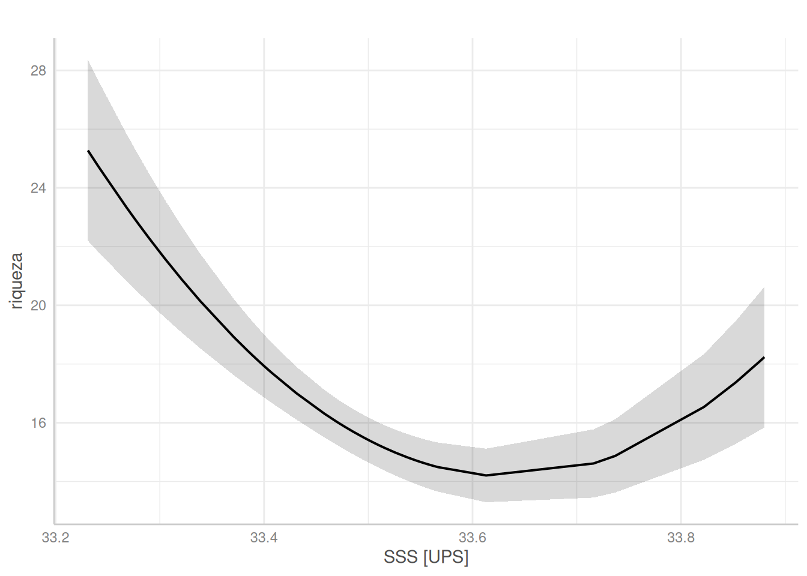
Se observa una relación lineal negativa entre gamma y riqueza, donde por cada aumento unitario de tamaño de las partículas, la riqueza disminuye en promedio entre 4.509 y 8.987 numero de taxones, con un 95% de confianza.
pred_gamma <- ggpredict(update(m_gamma,correlation = NULL))
plot(pred_gamma )+
labs(
title = "",
x = "gamma",
)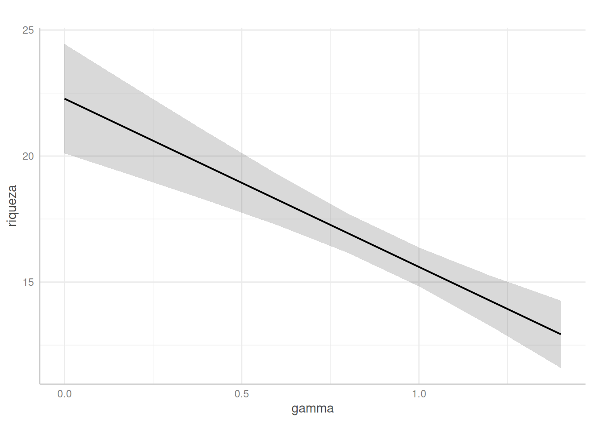
Discusión y conclusiones
Se observó que existe una relación, tanto entre la salinidad como con el tamaño de los organismos, con la riqueza de plancton de la misma.
Por un lado, se notó que el número de especies varía según el polinomio cuadrado de la salinidad (UPS) (p<0.05), con un mínimo en 33.61 UPS y presentando el máximo de número de taxones en aguas poco salobres, relacionadas con aguas internas de la plataforma.
Además, la cantidad de taxones disminuyó linealmente a menores tamaños de organismos, cayendo en promedio 6.748 números de taxones por unidad de gamma.
De esta manera, se puede concluir que las comunidades presentes en las aguas internas de la plataforma continental poseerán una mayor riqueza, asociada a una menor salinidad y organismos más grandes; frente a las comunidades del talud, las cuales poseerán un menor número de taxones.
Biblografia
Falkowski, P. G., Fenchel, T., & Delong, E. F. (2008). The microbial engines that drive Earth’s biogeochemical cycles. Science, 320(5879), 1034-1039.
Ferronato, C., Guinder, V. A., Rivarossa, M., Saraceno, M., Ibarbalz, F., Tillmann, U., … & Flombaum, P. (2025). Insights into protistan plankton blooms in the highly dynamic Patagonian Shelf and adjacent ocean basin in the southwestern Atlantic. Journal of Geophysical Research: Oceans, 130(3), e2024JC021412.
Guinder, V. A., Ferronato, C., Dogliotti, A. I., Segura, V., & Lutz, V. (2024). The phytoplankton of the Patagonian Shelf-break Front. The Patagonian Shelfbreak Front: Ecology, Fisheries, Wildlife Conservation, 49-72.
Kraberg, A., Baumann, M., & Dürselen, C. D. (2010). Coastal phytoplankton: photo guide for Northern European seas. Pfeil.
Lévy, M., Jahn, O., Dutkiewicz, S., Follows, M. J., & d’Ovidio, F. (2015). The dynamical landscape of marine phytoplankton diversity. Journal of the Royal Society Interface, 12(111), 20150481.
Piola, A. R., Palma, E. D., Bianchi, A. A., Castro, B. M., Dottori, M., Guerrero, R. A., … & Saraceno, M. (2018). Physical oceanography of the SW Atlantic Shelf: a review. Plankton ecology of the Southwestern Atlantic: from the subtropical to the subantarctic realm, 37-56.
Rivas, A. L., Dogliotti, A. I., & Gagliardini, D. A. (2006). Seasonal variability in satellite-measured surface chlorophyll in the Patagonian Shelf. Continental Shelf Research, 26(6), 703-720.
Romero, S. I., Piola, A. R., Charo, M., & Garcia, C. A. E. (2006). Chlorophyll‐a variability off Patagonia based on SeaWiFS data. Journal of Geophysical Research: Oceans, 111(C5).